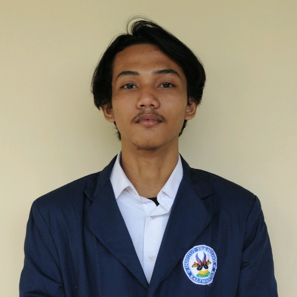

Profil

Halo, saya Muhammad Nazril Ilham, mahasiswa semester 2 di Institut Teknologi Kalimantan (ITK),
Program Studi Informatika. Saya memiliki ketertarikan yang mendalam dalam pemrograman perangkat
lunak dan Internet of Things (IoT). Pada akademik saya sudah mendapatkan Mata Kuliah yang
berhubungan dengan teknologi seperti Algoritma Pemrograman, Sistem Digital, Pemrograman
Berorientasi Objek, dan banyak Mata Kuliah TPB lainnya seperti Kalkulus, Fisika Dasar, Pengantar
Metode Statistika, dan lainnya.
Education
PTN : Institut Teknologi Kalimantan.
SMA : Sekolah Menengah Atas Negeri 9 Balikpapan.
SMP : Sekolah Menengah Pertama Negeri 3 Balikpapan.
Experience
Saya telah aktif terlibat dalam beberapa kepanitiaan dan pelatihan di kampus, mengasah
keterampilan kolaboratif, manajemen acara dan menjadi peserta dalam pelatihan akademik maupun
non akademik.
Projects
Saya telah aktif terlibat dalam berbagai proyek tugas besar yang menjadi bagian integral dari mata
kuliah yang saya ambil di kampus. Setiap proyek menghadirkan tantangan unik dan pelajaran berharga
yang membantu saya tumbuh sebagai seorang profesional di bidang saya. Berikut adalah beberapa proyek
tugas besar yang telah saya kerjakan selama masa studi saya di kampus.
- Algoritma Pemrograman
Membuat sebuah progam skoring mahasiswa dengan Python
- Pemrograman Berorientasi objek
Membuat sebuah program manajemen SPBU dengan Java
- Bahasa Inggris
Membuat sebuah video tentang biografi tokoh inspiratif
- Pengantar Metode Statistika
membuat sebuah tugas akhir "PERBANDINGAN KESEHATAN ANAK DI
INDONESIA : PENGARUH IMUNISASI CAMPAK, TINGKAT PENGANGGURAN DAN TINGKAT KEMISKINAN TERHADAP
ANGKA KEMATIAN BALITA DI INDONESIA TAHUN 2020" berdasarkan data dari bps.com
Hobbies & Interests
Hobbies
- Menonton film
- Bermain game
- Mengesksplor hal baru seperti menonton video edukatif
- Mendengarkan musik
Interests
- Internet of Things (IoT)
- Pemrograman Web
- Pengembangan perangkat lunak
- Bermusik